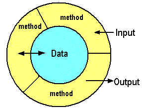
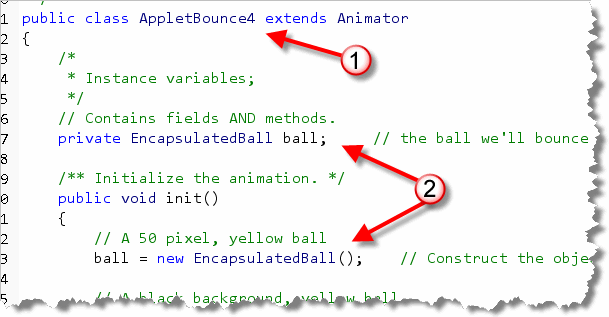
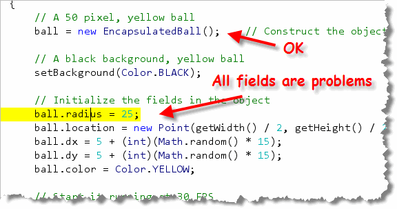
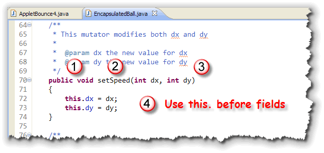

As you've seen, every class definition is divided into two parts—the things that instance of the class (objects) know how to do, and the data the those objects contain.
In a procedural program, the procedures that make up the program, and the data that those procedures operate on, are separate. In an object-oriented program, they are combined. This process of wrapping up procedures and data together is called encapsulation.

In this sense, theMethodBall class used
encapsulation, because it contained both data and methods
(like draw()) that used the data. In the more
important sense, though, MethodBall violates
the principle of encapsulation because it allows
unrestricted outside access to its data elements.
In this sense, encapsulation is used to enforce the principle of
data hiding. With proper encapsulation, the fields
defined inside a class are accessible to all the methods defined
inside the same class, but cannot be accessed by methods
outside that class, (like the init() method
in the AppletBounce3 program).
Before OOP, if you had two procedures that needed to operate on the same piece of information, you had to either make the data publicly accessible—and risk accidental data corruption as a result of a bug in someone else's code—or you had to pass the data as an argument to each of the functions that operated on it, a tedious and error-prone practice.
With encapsulation, all of the methods in your object can get to the data, but it is still protected from outside access.
Encapsulation in the Real World
When you first start programming, or, if you come from a language that has more liberal rules on data access, like C, you might find encapsulation a fairly strange idea. After all, why make it harder for your programs to access their data?
In fact, out in the real world, all of us are familiar with the
ideas of encapsulation. Let me give you a few examples.

- Today's automobiles are very complex engineering accomplishments;
much more complicated than Henry Ford's original Model-T. Despite
this added complexity, though, driving today's car is similar to,
if not simpler than, driving a Model-T.
That's because, as the cars got more complex, that complexity was hidden behind a simpler interface: the ignition (key), steering wheel, accelerator and brakes. Internal changes, such as the change from carburetors to fuel injections and from gasoline to hybrid don't require drivers to take a new class. That's because those details are encapsulated.
- Your computer is another modern, complex marvel that all of you use every day. Unless you are a hardware tech, though, you never open up the system unit and try to operate it by shorting the pins with a paper-clip. Instead, you use the computer's interface—the mouse, and keyboard— to control the thousands of complex working parts that it contains.
- Finally, think about your TV. Technologically, it's probably at least
as complex as your car or your computer, but you don't need a license
or a degree to operate one. Thanks to the magic of encapsulation,
exemplified by the remote control, every child in the country
can harness that power.
Just as with automobiles, computers and TVs, when it comes to programming, instead of making things more difficult encapsulation will actually make your objects both safer and easier to use.
Private Fields
The key to properly encapsulating your code is to use the
Java access modifier, private. As a rule,
you should always use private in front of
every field definition.
Some of you may note that the Java class libraries
don't always follow this advice. Specifically, the measuring
classes, like Rectangle, all have public
fields. The designers of Java generally regard the decision to
make these fields public a real mistake that lead
to performance problems in later versions of Java. If you'd
like to read more about this, just Google "Joshua Bloch" + "public fields".
EncapsulatedBall
To try this out, use DrJava to create a new ball class,
EncapsulatedBall by saving
MethodBall.java with a new name, and then
making the changes shown here:
 After you have saved the file with a new name,
modify each of the fields by
changing the
After you have saved the file with a new name,
modify each of the fields by
changing the public access specifier to
private as shown on the right.
You should be able to compile EncapsulatedBall.java without any errors.
AppletBounce4
To create the fourth version of AppletBounce, just open
AppletBounce3.java, then use Save As with
AppletBounce4.java as the new name.
Then, change the ball variable, so that it uses
the new EncapsulatedBall class as shown here:

Notice that in addition to changing the class name, there are two places where you need to changeMethodBall
to EncapsulatedBall. I've marked them both with arrows
and the number (2).
Once you've made these changes, go ahead and compile
AppletBounce4. As you can see below, things
don't go so smoothly this time. Now that
all of the ball's fields are private, your applet
can no longer modify them in its init() method.

There are two solutions to this problem; the first solution we'll look at involves adding accessors and mutators to the class.
Accessors, Mutators, Effectors
When you think about objects and methods, there are generally three different kinds:
- Mutator methods change the state of an object,
by changing the values stored in one of the fields. In
the
MethodBallclass,move(),bounceHorizontal()andbounceVertical()are all mutator methods. - Accessor methods are methods that return some
information about an object, but don't change the object.
Accessor methods are those like
length()orcharAt()in theStringclass. - Effector methods perform an action, but don't
modify the object or return a value. The
draw()method in theMethodBallclass, is an example of this kind of method.
There is no official computer-science term for methods like this; I've used the term effector because it seems useful to describe an instance method that isn't an accessor or mutator.
Getters and Setters
Simple accessors and mutators usually return information about,
or change one field inside the object. In Java, these are called
getters and setters, since the method names start
with get or set by convention.
The convention for boolean getter methods
is to start with the word is rather than get.
To see what a mutator and accessor look like, let's add both of
them for the color field in the EncapsulatedBall
class. (The pictures show MethodBall, but just
ignore that.)
The color Accessor
Here's what the accessor method looks like:
 Notice that:
Notice that:
- the methods starts with the word get.
- the name contains the attribute you want access to,
capitalized. Our field is named
color, so the second half of the name isColor. - the method returns the requested field.
Notice also that the Javadoc includes both a description line
and an @return tag containing a description of
the value returned. Often these have exactly the same verbiage,
but you still need to include them both. They are used in
different places when the documentation is generated.
The color Mutator
Here is the mutator method:
 Notice that:
Notice that:
- the naming is almost identical to that used for the
accessor, except the word
sethas been substituted forget. - the mutator needs to supply a new value for the field; in this
case that's the parameter variable named
color. - inside the method, the new value (from the parameter) is assigned to the field of the same name.
With mutators, it's common to name the parameter the same as the
field that it is going to replace. When you do this, inside the
method, the variable name refers only to the parameter.
To assign the value, you must use the keyword this
to indicate that you want to store the parameter value into the
field named color, and not back into itself.
If you use different names for your mutator parameters, though,
(perhaps newColor in this case), then you don't
need to use this to refer to the field named
color; you could simply write:
color = newColor; // color is the field color in this case
Fixing an Error
After you've added the setColor() mutator, you can
fix the error that appears at the end of the
AppletBounce4 init() method, by changing:
ball.color = Color.YELLOW;
to
ball.setColor(Color.YELLOW);
Finishing EncapsulatedBall
So, exactly what accessors and mutators does
EncapsulatedBall actually need to work?
One way to find out is to look at the code that uses the
class:
 If you look at
If you look at AppletBounce4, you'll see that we
now have four errors (since you fixed one of those errors by
adding the setColor() method). We don't actually
need any "getter" methods to fix these errors, though. Instead,
we should be able to get by with:
setRadius(int radius)to set the radius.setLocation(Point location)to set the location.setDX(int dx)to set the initial horizontal velocity.setDY(int dy)to set the initial vertical velocity.
Why Not setSpeed()?
You don't have
to add both accessors and mutators for each field. In fact,
you probably don't want to. Adding getters and setters
for each and every field is only a little better than making
the fields public.
Instead, you should attempt to only provide those methods that are needed. In our case, it looks like we need the mutator methods to initialize the initial location, color and so forth, but we really don't need to let the applet read that information.
Sometimes, though, you want a mutator that sets several fields
at once. For instance, instead of writing
setDX() and setDY() methods,
why not just add a single mutator method that
changes both fields: setSpeed().
Fortunately, it's not much more difficult than writing any
of the methods you practiced on during the first half of the
class:

- Start with the keywords
public void. Mutator methods modify the current object, so they usually don't have a returned value. (It is acceptable to return abooleanflag, though, so you can signal if the mutator was unable to change the object; it's just not very common.) - Mutator methods will start with
setand then the object attribute that you are changing. Note that object attributes don't have to correspond to fields defined inside the object. Fields are used to implement object attributes, but are not the attributes themselves. In our case, the attribute we'll be changing is the speed of the ball. - Mutators will often (perhaps most of the time) have parameters
that are used to change the object attribute. In our case,
we want two parameters: a new value for
dxand a new value fordy. - Inside the mutator, use the parameters to change the
actual fields used to represent the object's
attributes. In our case, we'll use the parameter
dxto modify the fielddx. Since both the parameter and the field have the same name, don't forget you'll need to include the keywordthisas a prefix to the field reference.
Once you've finished this mutator, the AppletBounce4
init() method can be finished up like this:

Try It Yourself
Once you've finished these changes to AppletBounce4 and EncapsulatedBall, compile and run the applet.

Encapsulation Summary
- Encapsulation is used to enforce the principle of data hiding inside objects. Objects should be responsible for all access to their own data fields.
- Encapsulation can make your code more reliable by hiding complex operations behind a simpler interface, just like the car, computer and television do.
- The key to proper encapsulation is to use the Java access modifier
privatein front of every field definition. Note, though, that constants orfinalfields may bepublicandstaticas well. - To make changes to a field, write a mutator or setter method.
If a mutator takes a parameter, you may use the same name
for the parameter and the field it modifies, provided you use
thisin front of the field name inside the method, to distinguish between the two uses of the name. - When writing the Javadoc documentation for a mutator, provide an
@paramtag for each formal parameter. Mutators generally have no return value. - To retrieve information about the state of the object, write accessor or getter methods, that return the value stored in a field, or a calculation based on the state of the object's fields.
- To write the Javadoc documentation for an accessor method,
provide an
@returntag that describes the returned value. Often this will be the same verbiage as used in the initial description line. - Accessor and mutator methods retrieve and change the
attributes of an object, but those attributes do not have to
each be represented by a field. For instance,
setSpeed()changes the speed of an object but modifies the horizontal and vertical velocity. A rectangle'sgetArea()method does not have to contain a field namedareato return the area attribute, which can be calculated from the width and height of the rectangle.